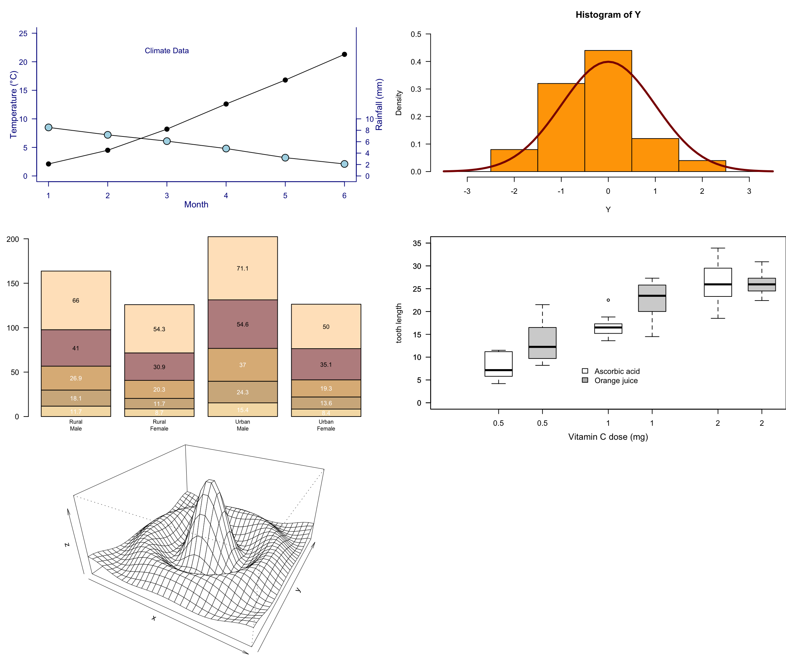

# Basic plot with my study data
plot(study_hours, exam_scores, pch=18)
text(10, 70, "Exam Scores\nversus\nStudy Hours")# Setting the parameter (3 rows by 2 cols)
par(mfrow=c(3, 2))
# Scatterplot with climate data
x <- months
y1 <- temperature
y2 <- rainfall
par(las=1, mar=c(4, 4, 3, 4), cex=.7)
plot.new()
plot.window(range(x), c(0, 25))
lines(x, y1)
lines(x, y2)
points(x, y1, pch=16, cex=1.5)
points(x, y2, pch=21, bg="lightblue", cex=2)
par(col="darkblue", fg="darkblue", col.axis="darkblue")
axis(1, at=seq(1, 6, 1)) # The first number (1) specifies bottom axis
axis(2, at=seq(0, 25, 5))
axis(4, at=seq(0, 10, 2))
box(bty="u")
mtext("Month", side=1, line=2, cex=0.8)
mtext("Temperature (°C)", side=2, line=2, las=0, cex=0.8)
mtext("Rainfall (mm)", side=4, line=2, las=0, cex=0.8)
text(3, 22, "Climate Data")
par(mar=c(5.1, 4.1, 4.1, 2.1), col="black", fg="black", col.axis="black")
# Histogram with modified colors
Y <- rnorm(50)
Y[Y < -3.5 | Y > 3.5] <- NA
x <- seq(-3.5, 3.5, .1)
par(mar=c(4.5, 4.1, 3.1, 0))
hist(Y, breaks=seq(-3.5, 3.5), ylim=c(0, 0.5),
col="orange", freq=FALSE)
lines(x, dnorm(x), lwd=3, col="darkred")
par(mar=c(5.1, 4.1, 4.1, 2.1))
# Barplot with neutral colors
par(mar=c(2, 3.1, 2, 2.1))
midpts <- barplot(VADeaths,
col=c("wheat", "tan", "burlywood", "rosybrown", "bisque"),
names=rep("", 4))
mtext(sub(" ", "\n", colnames(VADeaths)),
at=midpts, side=1, line=0.5, cex=0.5)
text(rep(midpts, each=5), apply(VADeaths, 2, cumsum) - VADeaths/2,
VADeaths,
col=rep(c("white", "black"), times=3:2),
cex=0.8)
par(mar=c(5.1, 4.1, 4.1, 2.1))
# Boxplot (kept original ToothGrowth data)
par(mar=c(3, 4.1, 2, 0))
boxplot(len ~ dose, data = ToothGrowth,
boxwex = 0.25, at = 1:3 - 0.2,
subset= supp == "VC", col="white",
xlab="", ylab="tooth length", ylim=c(0,35))
mtext("Vitamin C dose (mg)", side=1, line=2.5, cex=0.8)
boxplot(len ~ dose, data = ToothGrowth, add = TRUE,
boxwex = 0.25, at = 1:3 + 0.2,
subset= supp == "OJ")
legend(1.5, 9, c("Ascorbic acid", "Orange juice"),
fill = c("white", "gray"), bty="n")
par(mar=c(5.1, 4.1, 4.1, 2.1))
# 3D perspective plot (kept original)
x <- seq(-10, 10, length= 30)
y <- x
f <- function(x,y) { r <- sqrt(x^2+y^2); 10 * sin(r)/r }
z <- outer(x, y, f)
z[is.na(z)] <- 1
par(mar=c(0, 0.5, 0, 0), lwd=0.5)
persp(x, y, z, theta = 30, phi = 30, expand = 0.5)
par(mar=c(5.1, 4.1, 4.1, 2.1), lwd=1)
# Reset plotting parameters
par(mfrow=c(1, 1))